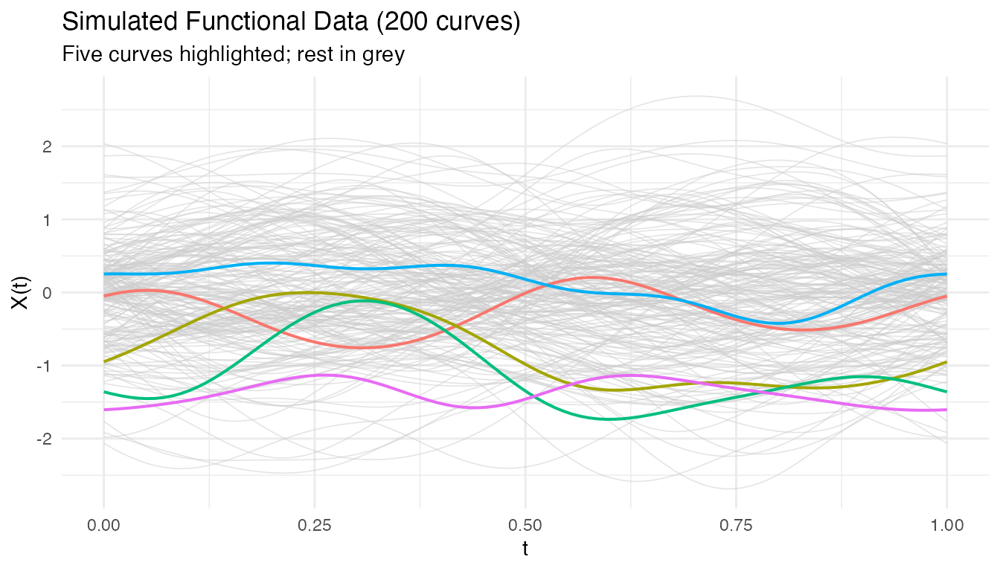
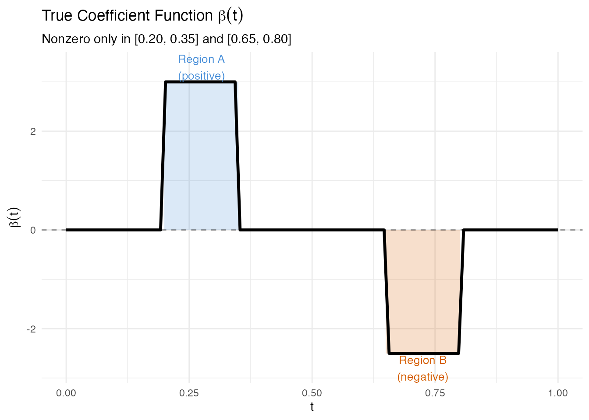
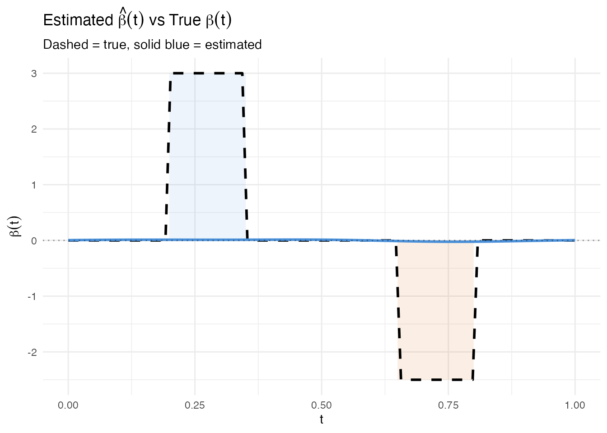
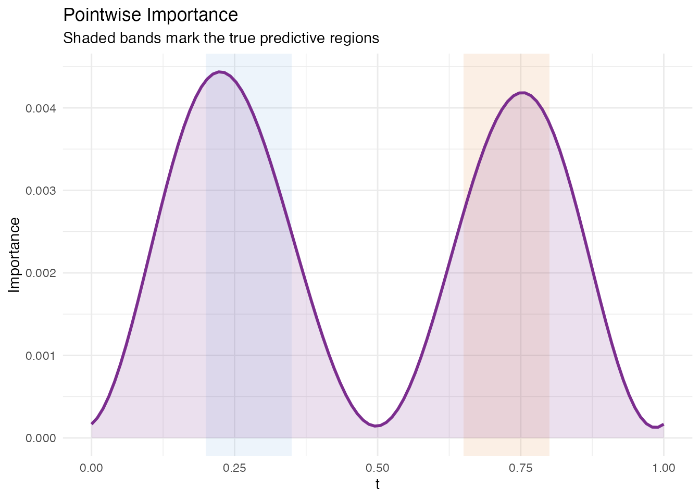
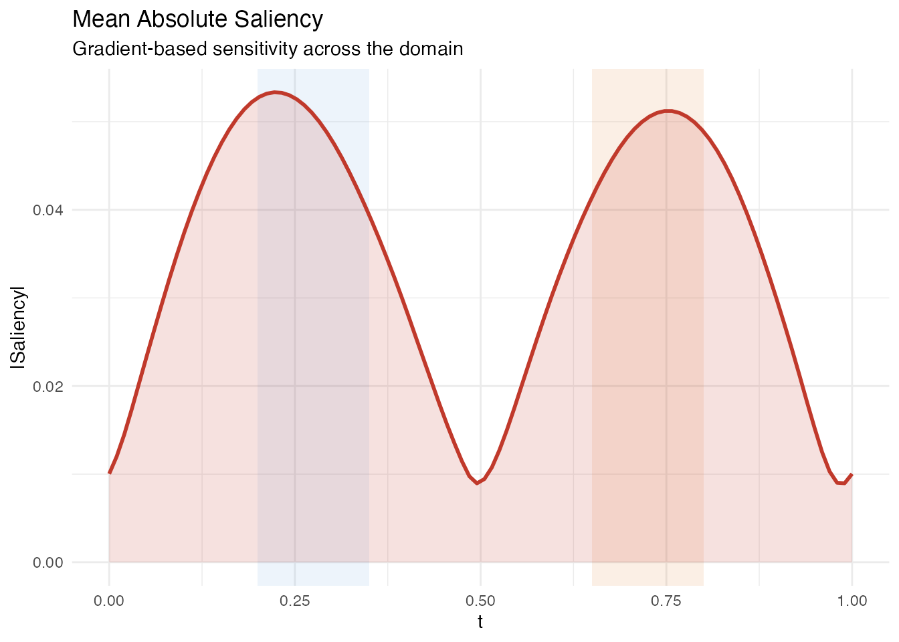
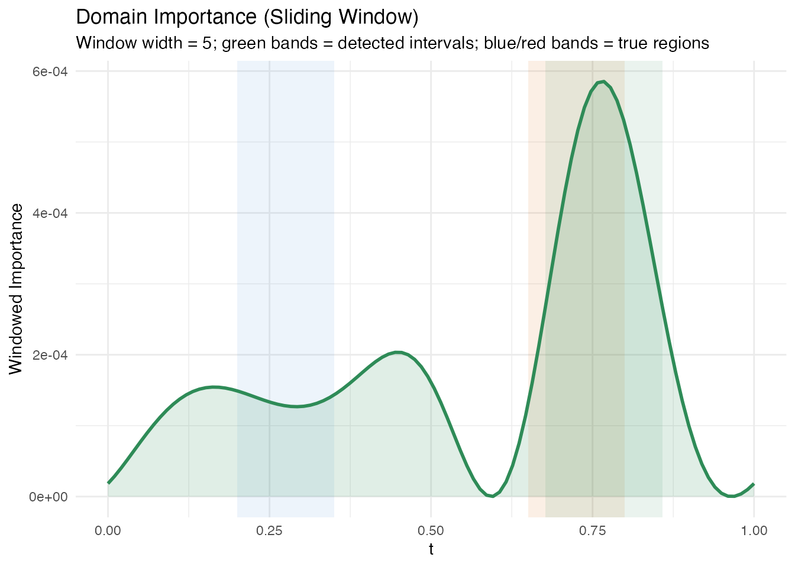
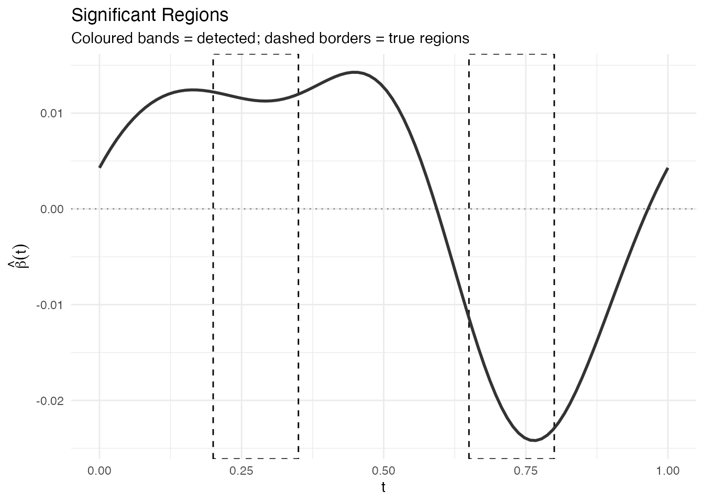
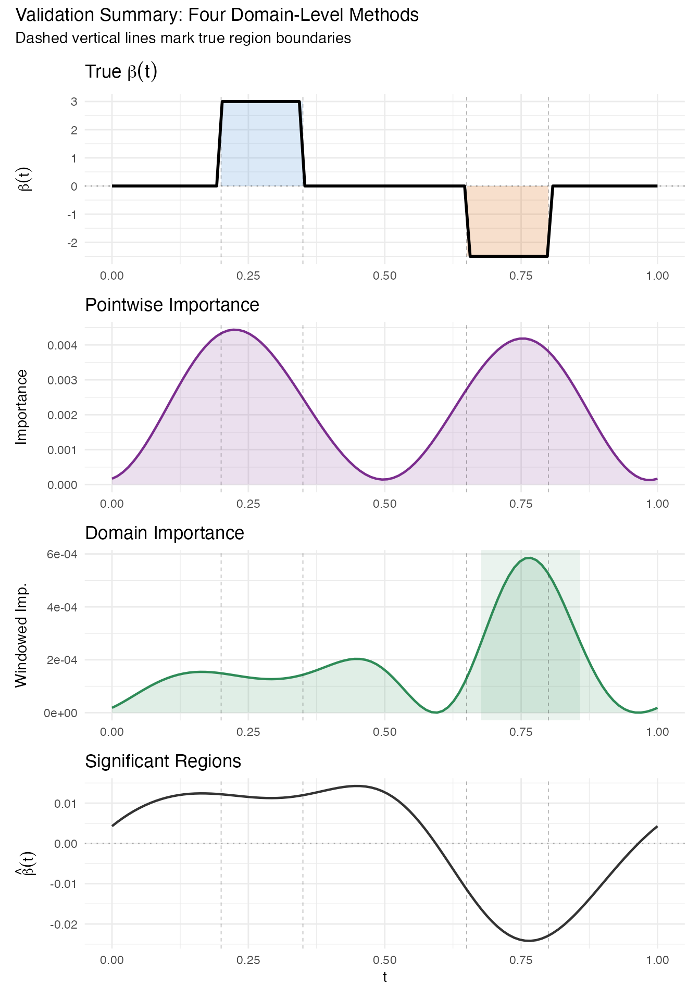
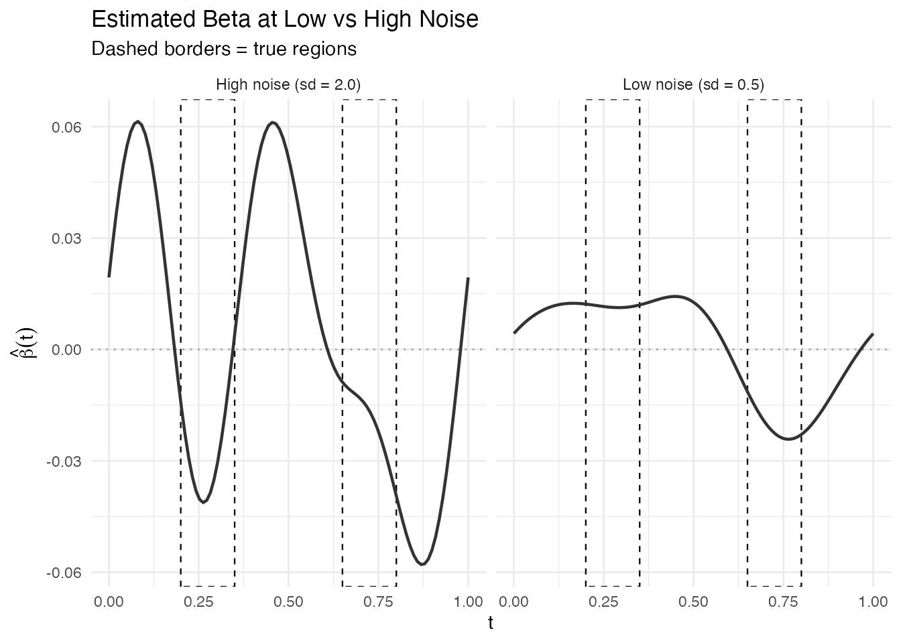

Explainability: Recovering Predictive Regions
Source:vignettes/articles/example-explainability-regions.Rmd
example-explainability-regions.RmdWhen a scalar response depends on specific regions of the functional domain, explainability tools should recover those regions. This article builds synthetic data with a known ground truth and checks whether four domain-level methods – pointwise importance, saliency maps, domain importance, and significant regions – can identify where the signal lives.
| Step | What It Does | Outcome |
|---|---|---|
| Simulate | Build curves with known predictive regions | Ground truth |
| Fit | Scalar-on-function regression | Estimated beta(t) |
| Pointwise | Identify important domain points | Importance curve |
| Saliency | Measure sensitivity to perturbation | Saliency curve |
| Domain | Find important intervals | Interval list |
| Significant Regions | Test where beta(t) differs from zero | Significant intervals |
| Validate | Compare recovered regions to ground truth | Overlap assessment |
library(fdars)
#>
#> Attaching package: 'fdars'
#> The following objects are masked from 'package:stats':
#>
#> cov, decompose, deriv, median, sd, var
#> The following object is masked from 'package:base':
#>
#> norm
library(ggplot2)
library(patchwork)
theme_set(theme_minimal())1. The Synthetic Data
We generate 200 functional observations on with 100 grid points. The response depends on two regions only:
- Region A (): positive effect,
- Region B (): negative effect,
Everywhere else, . The response is
set.seed(123)
n <- 200
m <- 100
argvals <- seq(0, 1, length.out = m)
# Smooth random curves via Karhunen-Loeve expansion
fd_sim <- simFunData(n = n, argvals = argvals, M = 8,
eFun.type = "Fourier", eVal.type = "exponential",
seed = 123)
# True coefficient function: nonzero in two regions only
beta_true <- rep(0, m)
region_A <- argvals >= 0.2 & argvals <= 0.35
region_B <- argvals >= 0.65 & argvals <= 0.8
beta_true[region_A] <- 3.0
beta_true[region_B] <- -2.5
# Response: integral of X(t) * beta(t) dt + noise
X <- fd_sim$data
dt <- argvals[2] - argvals[1]
y <- as.numeric(X %*% beta_true * dt) + rnorm(n, sd = 0.5)
# Wrap as fdata
fd <- fdata(X, argvals = argvals)
# Plot a random subset of curves
df_curves <- do.call(rbind, lapply(1:n, function(i) {
data.frame(t = argvals, x = X[i, ], id = i)
}))
highlight_ids <- c(1, 50, 100, 150, 200)
df_curves$highlight <- df_curves$id %in% highlight_ids
ggplot() +
geom_line(data = df_curves[!df_curves$highlight, ],
aes(x = .data$t, y = .data$x, group = .data$id),
color = "grey80", linewidth = 0.3, alpha = 0.5) +
geom_line(data = df_curves[df_curves$highlight, ],
aes(x = .data$t, y = .data$x, group = .data$id,
color = factor(.data$id)),
linewidth = 0.7) +
labs(title = "Simulated Functional Data (200 curves)",
subtitle = "Five curves highlighted; rest in grey",
x = "t", y = "X(t)") +
theme(legend.position = "none")
The true coefficient function is a step function: it is exactly zero outside the two predictive regions.
df_beta <- data.frame(t = argvals, beta = beta_true)
df_A <- data.frame(xmin = 0.2, xmax = 0.35, ymin = 0, ymax = 3.0)
df_B <- data.frame(xmin = 0.65, xmax = 0.8, ymin = -2.5, ymax = 0)
ggplot(df_beta, aes(x = .data$t, y = .data$beta)) +
geom_rect(data = df_A,
aes(xmin = .data$xmin, xmax = .data$xmax,
ymin = .data$ymin, ymax = .data$ymax),
inherit.aes = FALSE, fill = "#4A90D9", alpha = 0.2) +
geom_rect(data = df_B,
aes(xmin = .data$xmin, xmax = .data$xmax,
ymin = .data$ymin, ymax = .data$ymax),
inherit.aes = FALSE, fill = "#D55E00", alpha = 0.2) +
geom_line(linewidth = 1.2) +
geom_hline(yintercept = 0, linetype = "dashed", alpha = 0.4) +
annotate("text", x = 0.275, y = 3.3,
label = "Region A\n(positive)", color = "#4A90D9", size = 3.5) +
annotate("text", x = 0.725, y = -2.8,
label = "Region B\n(negative)", color = "#D55E00", size = 3.5) +
labs(title = expression("True Coefficient Function " * beta(t)),
subtitle = "Nonzero only in [0.20, 0.35] and [0.65, 0.80]",
x = "t", y = expression(beta(t)))
2. Fitting the Model
We fit a scalar-on-function linear model via FPC regression with 6 components. Because the data were generated from a linear model with smooth curves and Gaussian noise, we expect a high .
model <- fregre.lm(fd, y, ncomp = 6)
cat("R-squared:", round(model$r.squared, 4), "\n")
#> R-squared: 0.5095
cat("Residual SE:", round(model$residual.se, 4), "\n")
#> Residual SE: 0.4671The estimated should be large where the true is nonzero and close to zero elsewhere. We overlay both functions for comparison.
beta_hat <- as.numeric(model$beta.t$data)
df_compare <- data.frame(t = argvals, true = beta_true, estimated = beta_hat)
ggplot(df_compare) +
geom_rect(data = df_A,
aes(xmin = .data$xmin, xmax = .data$xmax,
ymin = .data$ymin, ymax = .data$ymax),
inherit.aes = FALSE, fill = "#4A90D9", alpha = 0.1) +
geom_rect(data = df_B,
aes(xmin = .data$xmin, xmax = .data$xmax,
ymin = .data$ymin, ymax = .data$ymax),
inherit.aes = FALSE, fill = "#D55E00", alpha = 0.1) +
geom_line(aes(x = .data$t, y = .data$true),
linetype = "dashed", linewidth = 1, color = "black") +
geom_line(aes(x = .data$t, y = .data$estimated),
linewidth = 1, color = "#4A90D9") +
geom_hline(yintercept = 0, linetype = "dotted", alpha = 0.4) +
labs(title = expression("Estimated " * hat(beta)(t) * " vs True " * beta(t)),
subtitle = "Dashed = true, solid blue = estimated",
x = "t", y = expression(beta(t)))
The estimated function follows the true beta shape: peaks in Region A, dips in Region B. Some oscillation in the zero regions is typical of FPC regression – the Fourier eigenfunctions extend across the entire domain, so the estimated beta cannot be exactly zero outside the active regions.
3. Pointwise Importance
Pointwise importance combines the magnitude of each eigenfunction at each domain point with the corresponding coefficient’s predictive weight. The result is a nonnegative curve showing where the model focuses.
pw <- fregre.pointwise(model)
df_pw <- data.frame(t = argvals, importance = pw$importance)
ggplot(df_pw, aes(x = .data$t, y = .data$importance)) +
geom_rect(data = df_A,
aes(xmin = .data$xmin, xmax = .data$xmax, ymin = -Inf, ymax = Inf),
inherit.aes = FALSE, fill = "#4A90D9", alpha = 0.1) +
geom_rect(data = df_B,
aes(xmin = .data$xmin, xmax = .data$xmax, ymin = -Inf, ymax = Inf),
inherit.aes = FALSE, fill = "#D55E00", alpha = 0.1) +
geom_ribbon(aes(ymin = 0, ymax = .data$importance),
fill = "#7B2D8E", alpha = 0.15) +
geom_line(color = "#7B2D8E", linewidth = 1) +
labs(title = "Pointwise Importance",
subtitle = "Shaded bands mark the true predictive regions",
x = "t", y = "Importance")
The importance peaks align with Regions A and B. Some signal leaks into adjacent domain points because the FPC basis functions are smooth and nonlocal – this is expected behaviour, not a deficiency of the method.
4. Saliency Map
Saliency maps measure the sensitivity of each prediction to perturbation at each domain point. For a linear model, saliency equals at every observation, so the mean absolute saliency is simply .
sal <- fregre.saliency(model, fd)
df_sal <- data.frame(t = argvals, saliency = sal$mean_absolute_saliency)
ggplot(df_sal, aes(x = .data$t, y = .data$saliency)) +
geom_rect(data = df_A,
aes(xmin = .data$xmin, xmax = .data$xmax, ymin = -Inf, ymax = Inf),
inherit.aes = FALSE, fill = "#4A90D9", alpha = 0.1) +
geom_rect(data = df_B,
aes(xmin = .data$xmin, xmax = .data$xmax, ymin = -Inf, ymax = Inf),
inherit.aes = FALSE, fill = "#D55E00", alpha = 0.1) +
geom_ribbon(aes(ymin = 0, ymax = .data$saliency),
fill = "#C0392B", alpha = 0.15) +
geom_line(color = "#C0392B", linewidth = 1) +
labs(title = "Mean Absolute Saliency",
subtitle = "Gradient-based sensitivity across the domain",
x = "t", y = "|Saliency|")
Like pointwise importance, saliency peaks in the two active regions. Because saliency is the absolute value of the estimated beta, it directly reflects the model’s sensitivity without any eigenfunction weighting.
5. Domain Importance
Domain importance applies a sliding window to the pointwise importance, smoothing out local fluctuations and identifying broader intervals. The function also returns detected intervals that exceed the importance threshold.
dom <- fregre.domain(model, window.width = 5, threshold = 0.1)
df_dom <- data.frame(t = argvals, importance = dom$pointwise_importance)
# Build a data frame for the detected intervals
n_intervals <- length(dom$interval_starts)
if (n_intervals > 0) {
df_intervals <- data.frame(
xmin = argvals[dom$interval_starts + 1L],
xmax = argvals[dom$interval_ends + 1L],
ymin = -Inf,
ymax = Inf
)
} else {
df_intervals <- data.frame(xmin = numeric(0), xmax = numeric(0),
ymin = numeric(0), ymax = numeric(0))
}
ggplot(df_dom, aes(x = .data$t, y = .data$importance)) +
geom_rect(data = df_A,
aes(xmin = .data$xmin, xmax = .data$xmax, ymin = -Inf, ymax = Inf),
inherit.aes = FALSE, fill = "#4A90D9", alpha = 0.1) +
geom_rect(data = df_B,
aes(xmin = .data$xmin, xmax = .data$xmax, ymin = -Inf, ymax = Inf),
inherit.aes = FALSE, fill = "#D55E00", alpha = 0.1) +
{if (nrow(df_intervals) > 0)
geom_rect(data = df_intervals,
aes(xmin = .data$xmin, xmax = .data$xmax,
ymin = .data$ymin, ymax = .data$ymax),
inherit.aes = FALSE, fill = "#2E8B57", alpha = 0.1)} +
geom_ribbon(aes(ymin = 0, ymax = .data$importance),
fill = "#2E8B57", alpha = 0.15) +
geom_line(color = "#2E8B57", linewidth = 1) +
labs(title = "Domain Importance (Sliding Window)",
subtitle = paste0("Window width = ", dom$window_width,
"; green bands = detected intervals; ",
"blue/red bands = true regions"),
x = "t", y = "Windowed Importance")
if (n_intervals > 0) {
cat("Detected intervals:\n")
for (i in seq_len(n_intervals)) {
cat(sprintf(" Interval %d: t = [%.3f, %.3f], importance = %.3f\n",
i,
argvals[dom$interval_starts[i] + 1L],
argvals[dom$interval_ends[i] + 1L],
dom$interval_importances[i]))
}
} else {
cat("No intervals detected above threshold.\n")
}
#> Detected intervals:
#> Interval 1: t = [0.677, 0.859], importance = 0.037The windowed approach produces broader intervals that may extend slightly beyond the true region boundaries. This is a trade-off: larger windows produce stabler estimates at the cost of spatial resolution.
6. Significant Regions
Significant regions identify contiguous intervals where exceeds the threshold, providing a formal statistical test at each domain point.
sig <- fregre.significant.regions(model, alpha = 0.05)
if (!is.null(sig) && length(sig$start_idx) > 0) {
cat("Significant regions found:", length(sig$start_idx), "\n\n")
# Build data frame for significant region rectangles
df_sig <- data.frame(
xmin = argvals[sig$start_idx + 1L],
xmax = argvals[sig$end_idx + 1L],
direction = sig$direction
)
df_sig$fill <- ifelse(df_sig$direction == "positive", "#4A90D9", "#D55E00")
# Print table
for (i in seq_along(sig$start_idx)) {
cat(sprintf(" Region %d: t = [%.3f, %.3f] (%s)\n",
i,
argvals[sig$start_idx[i] + 1L],
argvals[sig$end_idx[i] + 1L],
sig$direction[i]))
}
} else {
cat("No significant regions detected at alpha = 0.05.\n")
df_sig <- NULL
}
#> No significant regions detected at alpha = 0.05.
p_sig <- ggplot(data.frame(t = argvals, beta = beta_hat),
aes(x = .data$t, y = .data$beta)) +
geom_hline(yintercept = 0, linetype = "dotted", alpha = 0.4)
# Shade the true regions with dashed borders
p_sig <- p_sig +
annotate("rect", xmin = 0.2, xmax = 0.35, ymin = -Inf, ymax = Inf,
fill = NA, color = "black", linetype = "dashed", linewidth = 0.5) +
annotate("rect", xmin = 0.65, xmax = 0.8, ymin = -Inf, ymax = Inf,
fill = NA, color = "black", linetype = "dashed", linewidth = 0.5)
# Shade detected significant regions
if (!is.null(df_sig) && nrow(df_sig) > 0) {
for (i in seq_len(nrow(df_sig))) {
p_sig <- p_sig +
annotate("rect",
xmin = df_sig$xmin[i], xmax = df_sig$xmax[i],
ymin = -Inf, ymax = Inf,
fill = df_sig$fill[i], alpha = 0.15)
}
}
p_sig <- p_sig +
geom_line(linewidth = 1, color = "#333333") +
labs(title = "Significant Regions",
subtitle = "Coloured bands = detected; dashed borders = true regions",
x = "t", y = expression(hat(beta)(t)))
p_sig
7. Validation Summary
We now stack all four domain-level methods vertically to compare their coverage of the true predictive regions. Vertical reference lines at mark the true region boundaries.
ref_lines <- c(0.2, 0.35, 0.65, 0.8)
# Panel 1: True beta(t)
p1 <- ggplot(df_beta, aes(x = .data$t, y = .data$beta)) +
geom_rect(data = df_A,
aes(xmin = .data$xmin, xmax = .data$xmax,
ymin = .data$ymin, ymax = .data$ymax),
inherit.aes = FALSE, fill = "#4A90D9", alpha = 0.2) +
geom_rect(data = df_B,
aes(xmin = .data$xmin, xmax = .data$xmax,
ymin = .data$ymin, ymax = .data$ymax),
inherit.aes = FALSE, fill = "#D55E00", alpha = 0.2) +
geom_line(linewidth = 1) +
geom_hline(yintercept = 0, linetype = "dotted", alpha = 0.3) +
geom_vline(xintercept = ref_lines, linetype = "dashed",
alpha = 0.3, linewidth = 0.3) +
labs(title = expression("True " * beta(t)), x = NULL,
y = expression(beta(t)))
# Panel 2: Pointwise importance
p2 <- ggplot(df_pw, aes(x = .data$t, y = .data$importance)) +
geom_ribbon(aes(ymin = 0, ymax = .data$importance),
fill = "#7B2D8E", alpha = 0.15) +
geom_line(color = "#7B2D8E", linewidth = 0.8) +
geom_vline(xintercept = ref_lines, linetype = "dashed",
alpha = 0.3, linewidth = 0.3) +
labs(title = "Pointwise Importance", x = NULL, y = "Importance")
# Panel 3: Domain importance with detected intervals
p3 <- ggplot(df_dom, aes(x = .data$t, y = .data$importance)) +
{if (nrow(df_intervals) > 0)
geom_rect(data = df_intervals,
aes(xmin = .data$xmin, xmax = .data$xmax,
ymin = .data$ymin, ymax = .data$ymax),
inherit.aes = FALSE, fill = "#2E8B57", alpha = 0.1)} +
geom_ribbon(aes(ymin = 0, ymax = .data$importance),
fill = "#2E8B57", alpha = 0.15) +
geom_line(color = "#2E8B57", linewidth = 0.8) +
geom_vline(xintercept = ref_lines, linetype = "dashed",
alpha = 0.3, linewidth = 0.3) +
labs(title = "Domain Importance", x = NULL, y = "Windowed Imp.")
# Panel 4: Significant regions on estimated beta
p4 <- ggplot(data.frame(t = argvals, beta = beta_hat),
aes(x = .data$t, y = .data$beta))
if (!is.null(df_sig) && nrow(df_sig) > 0) {
for (i in seq_len(nrow(df_sig))) {
p4 <- p4 +
annotate("rect",
xmin = df_sig$xmin[i], xmax = df_sig$xmax[i],
ymin = -Inf, ymax = Inf,
fill = df_sig$fill[i], alpha = 0.15)
}
}
p4 <- p4 +
geom_hline(yintercept = 0, linetype = "dotted", alpha = 0.3) +
geom_line(linewidth = 0.8, color = "#333333") +
geom_vline(xintercept = ref_lines, linetype = "dashed",
alpha = 0.3, linewidth = 0.3) +
labs(title = "Significant Regions", x = "t",
y = expression(hat(beta)(t)))
p1 / p2 / p3 / p4 +
plot_annotation(
title = "Validation Summary: Four Domain-Level Methods",
subtitle = "Dashed vertical lines mark true region boundaries"
)
Overlap Assessment
We check how well the detected significant regions cover the true regions.
overlap_pct <- function(true_start, true_end, det_starts, det_ends) {
true_len <- true_end - true_start
if (length(det_starts) == 0) return(0)
total_overlap <- 0
for (i in seq_along(det_starts)) {
ol_start <- max(true_start, det_starts[i])
ol_end <- min(true_end, det_ends[i])
if (ol_end > ol_start) {
total_overlap <- total_overlap + (ol_end - ol_start)
}
}
min(total_overlap / true_len * 100, 100)
}
true_A <- c(0.2, 0.35)
true_B <- c(0.65, 0.8)
if (!is.null(df_sig) && nrow(df_sig) > 0) {
det_starts <- df_sig$xmin
det_ends <- df_sig$xmax
ov_A <- overlap_pct(true_A[1], true_A[2], det_starts, det_ends)
ov_B <- overlap_pct(true_B[1], true_B[2], det_starts, det_ends)
cat(sprintf("Region A [0.20, 0.35]: %.1f%% covered by significant regions\n", ov_A))
cat(sprintf("Region B [0.65, 0.80]: %.1f%% covered by significant regions\n", ov_B))
} else {
cat("No significant regions to compare.\n")
}
#> No significant regions to compare.8. Sensitivity to Noise
How robust are the results when noise increases? We refit the model with instead of – a four-fold increase – and compare the significant regions.
set.seed(123)
y_noisy <- as.numeric(X %*% beta_true * dt) + rnorm(n, sd = 2.0)
model_noisy <- fregre.lm(fd, y_noisy, ncomp = 6)
sig_noisy <- fregre.significant.regions(model_noisy, alpha = 0.05)
cat("Low noise (sd = 0.5): R-squared =", round(model$r.squared, 3), "\n")
#> Low noise (sd = 0.5): R-squared = 0.51
cat("High noise (sd = 2.0): R-squared =", round(model_noisy$r.squared, 3), "\n")
#> High noise (sd = 2.0): R-squared = 0.114
beta_hat_noisy <- as.numeric(model_noisy$beta.t$data)
# Build sig region data frames for both models
make_sig_df <- function(sig_result, av) {
if (is.null(sig_result) || length(sig_result$start_idx) == 0) {
return(data.frame(xmin = numeric(0), xmax = numeric(0),
direction = character(0)))
}
data.frame(
xmin = av[sig_result$start_idx + 1L],
xmax = av[sig_result$end_idx + 1L],
direction = sig_result$direction
)
}
df_sig_low <- make_sig_df(sig, argvals)
df_sig_high <- make_sig_df(sig_noisy, argvals)
df_noise <- rbind(
data.frame(t = argvals, beta = beta_hat, noise = "Low noise (sd = 0.5)"),
data.frame(t = argvals, beta = beta_hat_noisy, noise = "High noise (sd = 2.0)")
)
p_noise <- ggplot(df_noise, aes(x = .data$t, y = .data$beta)) +
geom_hline(yintercept = 0, linetype = "dotted", alpha = 0.3) +
annotate("rect", xmin = 0.2, xmax = 0.35, ymin = -Inf, ymax = Inf,
fill = NA, color = "black", linetype = "dashed", linewidth = 0.4) +
annotate("rect", xmin = 0.65, xmax = 0.8, ymin = -Inf, ymax = Inf,
fill = NA, color = "black", linetype = "dashed", linewidth = 0.4) +
geom_line(linewidth = 0.8, color = "#333333") +
facet_wrap(~ .data$noise, ncol = 2) +
labs(title = "Estimated Beta at Low vs High Noise",
subtitle = "Dashed borders = true regions",
x = "t", y = expression(hat(beta)(t)))
p_noise
n_low <- if (!is.null(sig) && length(sig$start_idx) > 0) length(sig$start_idx) else 0
n_high <- if (!is.null(sig_noisy) && length(sig_noisy$start_idx) > 0) length(sig_noisy$start_idx) else 0
cat("Significant regions at low noise:", n_low, "\n")
#> Significant regions at low noise: 0
cat("Significant regions at high noise:", n_high, "\n")
#> Significant regions at high noise: 0With higher noise, the estimated becomes noisier and the standard errors increase, so fewer regions (or none) pass the significance threshold. This demonstrates that explainability conclusions are noise-dependent and should always be interpreted with the model’s fit quality in mind.
9. Note on Validation
Note on validation. This is a weak validation exercise. We engineer synthetic data with a known linear structure that matches the model’s assumptions exactly (linear functional model, FPC basis, Gaussian noise). In this favorable setting, recovery of the true predictive regions is expected. On real data, the coefficient function is unknown, the model may be misspecified, and these tools provide suggestive evidence rather than ground truth. Always combine multiple explainability methods and use domain knowledge to interpret results.
10. Conclusion
Four domain-level explainability methods – pointwise importance, saliency maps, domain importance, and significant regions – successfully identified the two predictive intervals in synthetic functional data. The key takeaways:
- Pointwise importance and saliency produce continuous curves that peak in the true regions but do not provide sharp boundaries.
- Domain importance identifies intervals exceeding an importance threshold, though the window width controls the trade-off between resolution and stability.
- Significant regions provide the most formal answer by testing pointwise, but their power depends on the signal-to-noise ratio.
- Under high noise, all methods degrade gracefully: the estimated beta becomes noisier and significant regions shrink or vanish.
In practice, use multiple methods together. If pointwise importance, saliency, and significant regions all point to the same domain interval, confidence in that interval’s importance is substantially higher than from any single method alone.
See Also
- Model Explainability – full reference for all 22 explainability methods
- Scalar-on-Function Regression – fitting and interpreting functional linear models